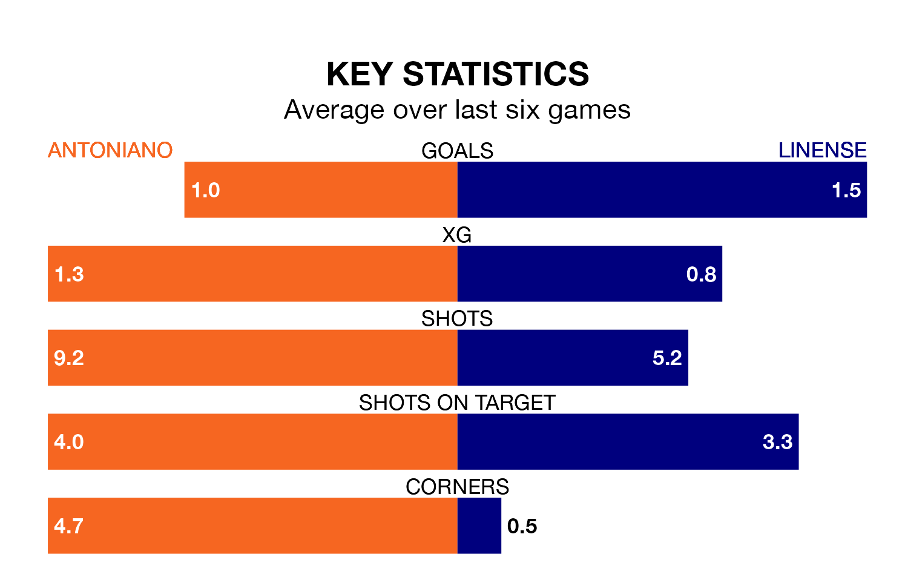

Linense face Antoniano on Sunday seeking to protect their long unbeaten run in the Segunda División RFEF Group 4.
Linense are unbeaten in five, with three wins and two draws, ahead of the 11am kick-off.
They face an Antoniano team who have won two and drawn two over the same number of games.
With 28 goals in 33 games so far this season, Antoniano are scoring at below the league average rate with 0.8 goals per game. And they are conceding more than average, letting in 38 goals at a rate of 1.2 per game.
Linense, meanwhile, are average scorers, with 1.0 goal per game. They have also conceded 1.0 goal per game.
The hosts are 11th in the table after 33 games, of which they have won 11 and drawn 10, earning 43 points.
The away team are three places ahead of Antoniano in eighth, with 12 wins and 10 draws putting them on 46 points.
Antoniano's last match was on April 28, a 1-1 draw against Cádiz B, with Jaime López Rodríguez getting the goal for Antoniano.
Linense beat Cartagena B 2-0 last time out, also on April 28, with Aridane Jesús Santana Cabrera and João Pedro Costa Contreiras Martins on the scoresheet.
Updated: 10:44 (UTC), 30/04/24